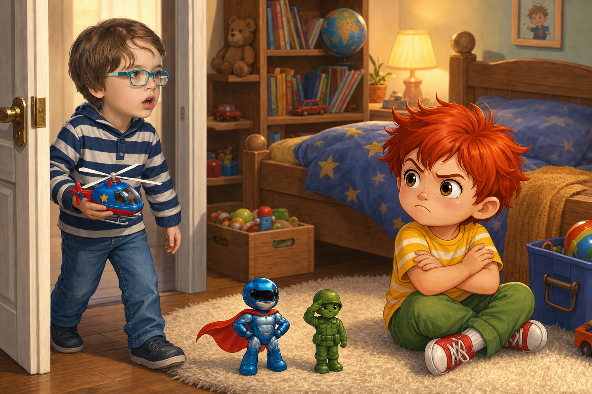
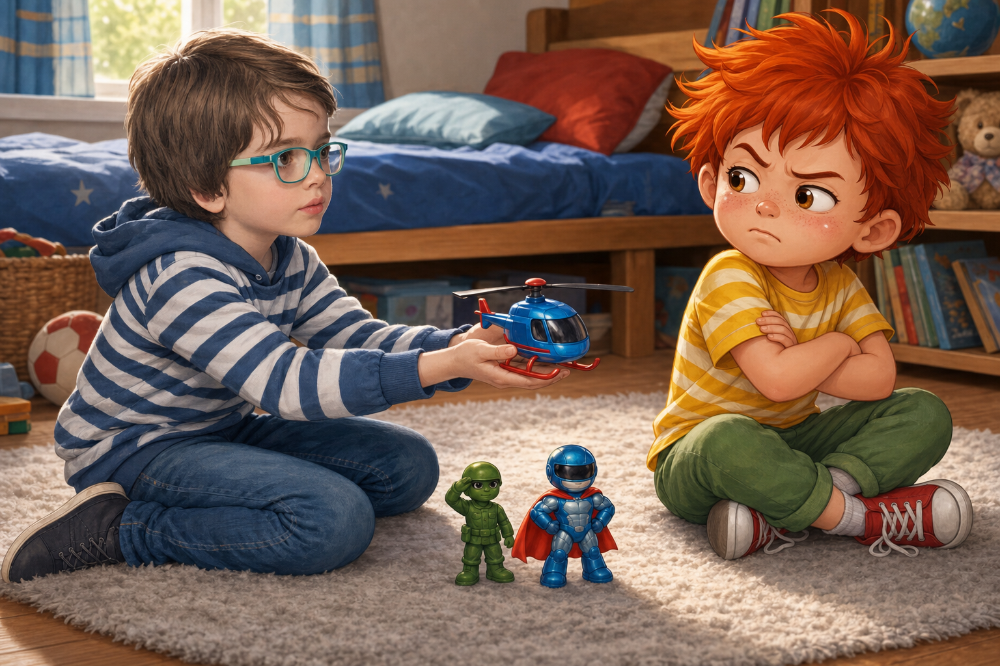
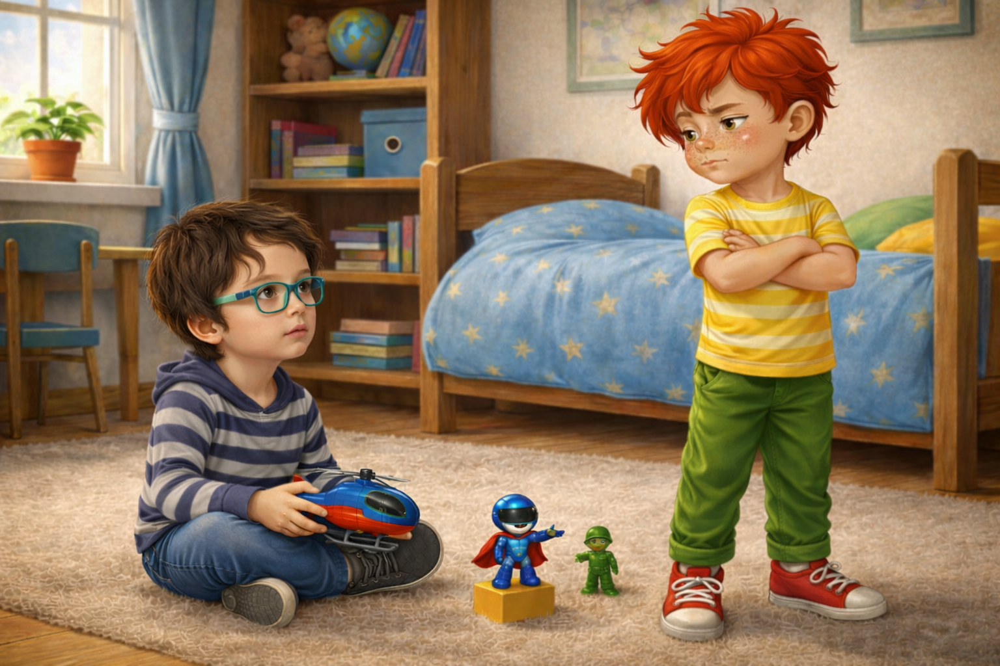
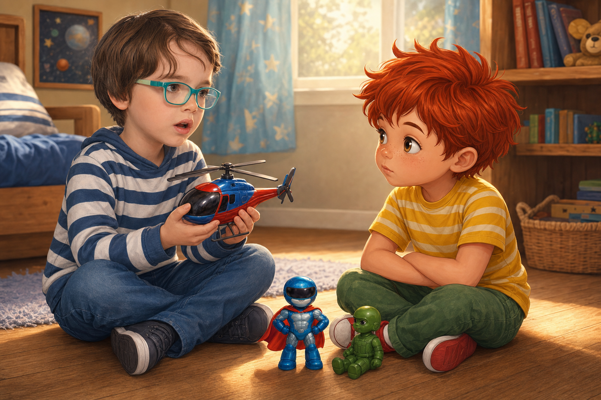
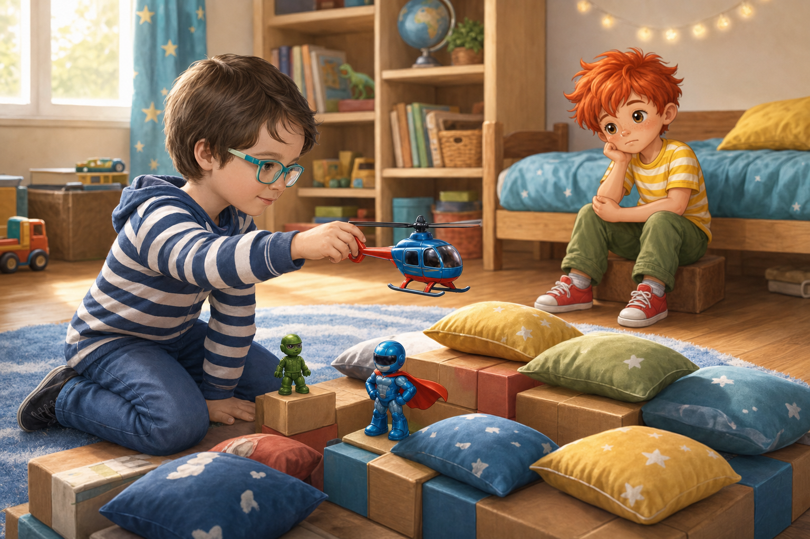
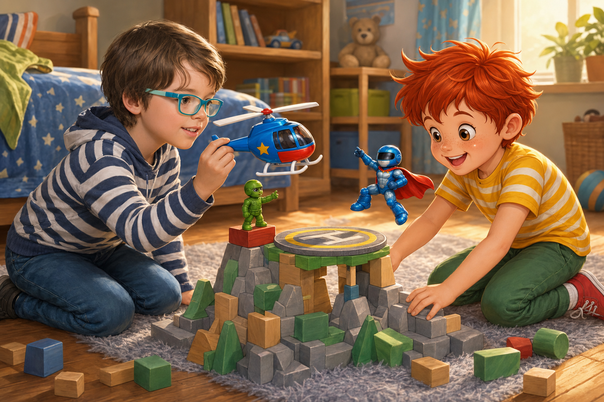

Денят без инат
Палавко се събуди намръщен.
Не просто намръщен, а така намръщен, че дори червената му коса изглеждаше сърдита.
През нощта беше сънувал много странен сън. В съня всички му казваха какво да прави.
„Облечи това!“
„Яж онова!“
„Играй така!“
„Не пипай!“
„Побързай!“
А Палавко тичаше от стая в стая и никой не го питаше какво иска той.
Когато отвори очи, възглавницата още беше топла, а сънят още стоеше в главата му като възел.
Мама подаде глава през вратата.
- Добро утро, Палавко. Искаш ли филийка с мед?
- Не - каза Палавко веднага.
Мама се усмихна.
- А с масло?
- Не.
- А само да станеш и после ще решиш?
- Не!
Третото „не“ излезе по-силно. Палавко сам се изненада, но не го показа. Скръсти ръце и реши, че днес ще казва „не“ на всичко. Така никой нямаше да го командва.
На килима го чакаха Рико и Блицко.
Рико стоеше до крепост от кубчета и изглеждаше много сериозно, както винаги изглеждат малките зелени пластмасови войници, когато пазят нещо важно.
Блицко беше кацнал върху възглавницата. Синьо-сребристият му костюм блестеше, тъмният визьор криеше очите му, а червено-оранжевата пелерина беше разперена като знаме.
- Командире Палавко - каза Рико, - крепостта очаква заповеди.
- Не давам заповеди - отсече Палавко.
- Тогава може би спасителен полет? - предложи Блицко.
- Не.
Блицко наклони глава.
- Това „не“ беше към полета, към спасението или към мен лично?
- Към всичко - каза Палавко.
Точно тогава на вратата се почука.
- Камен е тук! - извика мама от коридора.
Палавко отвори уста да каже „не“, но Камен вече надникна в стаята.
Камен носеше синьо-червено хеликоптерче с бели перки и малка жълта звезда отстрани. Беше го хванал с две ръце, много внимателно.

- Здрасти - каза Камен. Устата му беше леко отворена, сякаш тъкмо щеше да разкаже тайна. - Донесох хеликоптера.
Палавко погледна играчката. Беше хубава. Даже много хубава.

- Не искам да играя - каза той бързо, преди любопитството да му проличи.
Камен не се обиди. Седна на килима и остави хеликоптерчето пред себе си.
- Добре. Можеш само да гледаш.
- И да гледам не искам.
- Тогава можеш да не гледаш - каза Камен спокойно.
Това обърка Палавко. Обикновено, когато кажеше „не“, някой започваше да го убеждава. А Камен не го убеждаваше.
Рико пристъпи напред.
- Предлагам въздушна мисия над крепостта.
Блицко вдигна ръка.
- Аз предлагам буря, счупен мост и много драматично спасяване.
- Не - каза Палавко.
- Но ние не те караме - каза Камен.
- Пак не.
- На кое?
Палавко млъкна.
Не знаеше на кое. Просто думата беше застанала пред него като стена и той я буташе напред.

Камен завъртя хеликоптерчето в ръцете си. Не го хвърляше. Не го блъскаше. Пазеше го така, сякаш вътре има нещо повече от пластмаса.
- Това ми го подари татко - каза той. - Когато не е до мен, го държа и си мисля за него. Все едно част от него ми казва: „Хайде, Камене, измисли нещо смело.“
Палавко погледна хеликоптерчето още веднъж.
Сега то не изглеждаше просто като играчка. Изглеждаше като малък спомен с перки.

- Може да направим спасителна мисия - предложи Камен. - Кубчетата ще са планини. Рико ще е командир. Блицко ще лети напред. А хеликоптерът ще спаси изгубеното мече от върха.
Палавко усети как му се приисква да каже: „Аз ще направя планината!“
Но вместо това каза:
- Не.
Този път думата прозвуча тъжно.
Камен го погледна внимателно.
- Ти наистина ли не искаш, или просто не искаш някой да решава вместо теб?
Палавко застина.
Точно това беше. Сънят. Гласовете. Всички казват, никой не пита.
- Не знам - промърмори той.
- Можеш да кажеш „чакай“ - каза Камен. - Не е нужно всяка врата да я затръшваш.
Палавко сви рамене и се отдръпна до леглото.
Камен не го последва. Вместо това подреди две възглавници като планини, сложи синя книга за езеро и постави Рико до една кула от кубчета.
- Командире Рико, вятърът се усилва!
- Потвърждавам - каза Рико. - Нужна е помощ от въздуха.
Блицко застана на ръба на възглавницата.
- Аз ще летя напред! Ако пелерината ми се развее прекалено геройски, не се тревожете. Това е нормално.
Камен се засмя.
Палавко не искаше да се смее. Но почти се засмя.
После видя как хеликоптерчето прелита над планината, как Блицко показва пътя, как Рико пази площадката за кацане.
Играта вървеше без него.

Не защото никой не го искаше.
А защото той сам стоеше зад своето „не“.
Това го бодна отвътре.
- Не е честно - каза Палавко.
Камен спря хеликоптерчето.
- Кое?
- Че играете.
- Поканихме те.
- Да, ама аз бях сърдит.
- Още ли си?
Палавко погледна към прозореца. После към кубчетата. После към хеликоптерчето.
- Малко.
- Тогава ела малко - каза Камен. - Не е нужно да идваш целият наведнъж.
Рико кимна.
- Приемаме половин Палавко за начало.
Блицко вдигна пръст.
- Но само ако половината Палавко носи идея.
Палавко пристъпи една крачка.
- Може би... може би планината е твърде ниска.
Камен се усмихна.
- Това вече е строителна забележка.
- И площадката трябва да има жълта светлина - добави Палавко.
- Това вече е важно - каза Рико.
Палавко взе жълто кубче и го сложи до площадката. После добави още две възглавници. После направи тунел от книга и одеяло.
Без да усети, вече беше на килима.
- Хеликоптерът трябва да кацне тук - каза той. - Но бавно, защото има буря.
- Има буря! - извика Блицко доволно.
Камен подаде хеликоптерчето към Палавко.
- Искаш ли ти да го насочиш?
Палавко протегна ръце, после ги дръпна.
- А ако го счупя?
- Ще го държиш с две ръце - каза Камен. - И ще го пазиш. Това е подарък от татко.
Палавко кимна сериозно.

Взе хеликоптерчето внимателно, сякаш държи не просто играчка, а доверие.
- Ще го пазя.
И го пазеше.
Хеликоптерът прелетя над възглавничната планина, заобиколи бурята на Блицко, получи разрешение от Рико и кацна точно до изгубеното мече.
- Спасено! - извика Палавко.
Камен се засмя.
- Видя ли? Като не казваш „не“ на всичко, остава място за приключение.
Палавко се замисли.
- Аз май не казвах „не“ на играта.
- А на какво?
- На това някой да решава вместо мен.
Камен кимна.
- Това е различно.
- Но като казвах „не“ на всичко, все едно казвах „не“ и на себе си.
Рико застана мирно.
- Мъдро заключение.
Блицко разпери пелерината си.
- Записвам го в невидимия дневник на супергероите.
Вечерта мама попита:
- Как мина денят?
Палавко се усмихна.
- Започна с инат.
- А после?
- После Камен донесе хеликоптер, Рико даде разрешение, Блицко направи буря, а аз разбрах, че „не“ не е играчка. Не трябва да го хвърляш навсякъде.
Мама се засмя.
- И как свърши денят?
Палавко погледна Камен, после хеликоптерчето, после Рико и Блицко.
- Без инат.
Поука:
Понякога „не“ ни помага да кажем какво не искаме. Но ако го казваме на всичко, заключваме и радостта отвън. Когато кажем какво чувстваме, играта намира път към нас.